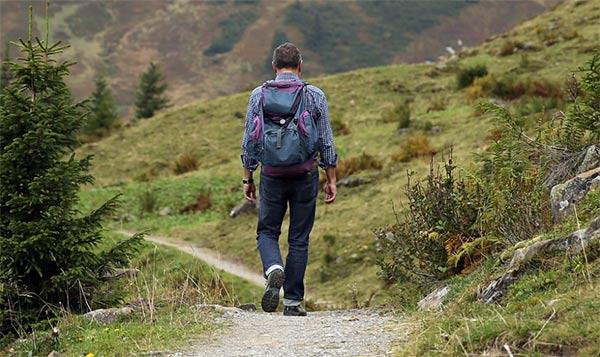

Actividades de Montaña en Almería
Senderismo en Almeria


El senderismo es una actividad que puede confundirse con el excursionismo. Según se desprende de la extensa literatura sobre deportes al aire libre, el excursionismo sería la disciplina más cercana y precursora del senderismo, aunque a diferencia de este, discurre por senderos no balizados y, por tanto, no cuenta con las garantías de seguridad y calidad que proporcionan los senderos homologados. En la mayoría de ocasiones, la actividad suele desarrollarse durante un mismo día.
Un sendero homologado es una instalación deportiva, identificada por un código de marcas patentado, que se desarrolla preferentemente en el medio natural y sobre viales tradicionales, y que cuenta con el visto bueno del organismo competente al cumplir los requisitos exigidos por la legislación de cada país. Su fin es facilitar al caminante su recorrido con seguridad y calidad.
Un sendero homologado es una instalación deportiva, identificada por un código de marcas patentado, que se desarrolla preferentemente en el medio natural y sobre viales tradicionales, y que cuenta con el visto bueno del organismo competente al cumplir los requisitos exigidos por la legislación de cada país. Su fin es facilitar al caminante su recorrido con seguridad y calidad.
El hecho de estar homologado implica que el sendero se encuentra señalizado con un sistema de marcas, que cuenta con una topoguía descriptiva, que existe un compromiso de mantenimiento por parte del promotor y que cumple los requisitos establecidos por el organismo competente en cada país. Un sendero homologado es una instalación deportiva, identificada por un código de marcas patentado, que se desarrolla preferentemente en el medio natural y sobre viales tradicionales, y que cuenta con el visto bueno del organismo competente al cumplir los requisitos exigidos por la legislación de cada país. Su fin es facilitar al caminante su recorrido con seguridad y calidad.